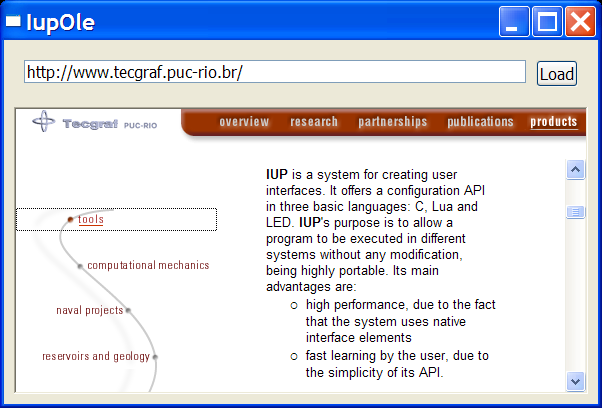

The IupOleControl hosts an windows OLE control (also named ActiveX control), allowing it to be used inside IUP dialogs. There are many OLE controls available, like calendars, internet browsers, PDF readers etc.
Notice that IupOleControl just takes care of the visualization of the control (size and positioning), and map some callbacks (navigate and new window) using a listener interface to sink events. It does not deal with properties, methods and events. The application must deal with them using the COM interfaces offered by the control. Nevertheless, using IupLua together with LuaCOM makes it possible to use OLE controls very easily in Lua, accessing their methods, properties and events similarly to the other IUP elements.
Notice that this control works only on Windows.
The IupOleControlOpen function must be called after a IupOpen, so that the control can be used. The iupole.h file must also be included in the source code. The program must be linked to the controls library (iupole).
To make the control available in Lua use require"iupluaole" or manually call the initialization function in C, iupolelua_open, after calling iuplua_open. When manually calling the function the iupluaole.h file must also be included in the source code, and the program must be linked to the lua control library (iupluaole).
Ihandle* IupOleControl(const char* ProgID); [in C]
iup.olecontrol{ProgID: string} -> (elem: ihandle) [in Lua]
olecontrol(ProgID) [in LED]
ProgID: the programmatic identifier of the OLE control. This can be found in the documentation of the OLE control or by browsing the list of registered controls, using tools like OleView.
Returns: the identifier of the created element, or NULL if an error occurs.
DESIGNMODE: activates the design mode. Some controls behave differently when in design mode. See this article for more information about design mode. Can be YES or NO. Default value: "NO".
DESIGNMODE_DONT_NOTIFY: sets the design mode, but do not notify the native control.
IUNKNOWN (read-only): Returns the IUnknown pointer for the control. This pointer is necessary to access methods and properties of the control in C/C++ code.
The control's specific attributes shall be accessed using the COM mechanism (see section below for more information).
Some IupCanvas attributes may also work, like:
ACTIVE, SCREENPOSITION, POSITION, MINSIZE, MAXSIZE, WID, TIP, SIZE, RASTERSIZE, ZORDER, VISIBLE
In C/C++, the OLE control's callbacks (events, in ActiveX terms) shall be set using the control's interface and the COM mechanism. When using IupLua, it's possible to call methods, access properties and receive events from the OLE control using the LuaCOM library. When the LuaCOM library is loaded, call elem:CreateLuaCOM so a LuaCOM object is created and stored in the "elem.com" field of the object returned by iup.olecontrol. This LuaCOM object can be used to access properties, methods and events in a way very similar to VB. See the examples for more information.
Some IupCanvas callbacks may also work, like:
MAP_CB, UNMAP_CB, GETFOCUS_CB, KILLFOCUS_CB, ENTERWINDOW_CB, LEAVEWINDOW_CB.
elem:CreateLuaCOM()
If LuaCOM is loaded and the IUNKNOWN is valid then set:
elem.com = luacom.CreateLuaCOM(luacom.ImportIUnknown(elem.iunknown))
To learn more about OLE and ActiveX:
http://www.microsoft.com/com
http://www.webopedia.com/TERM/A/ActiveX_control.html
http://msdn.microsoft.com/workshop/components/activex/activex_node_entry.asp
http://activex.microsoft.com/activex/activex/
